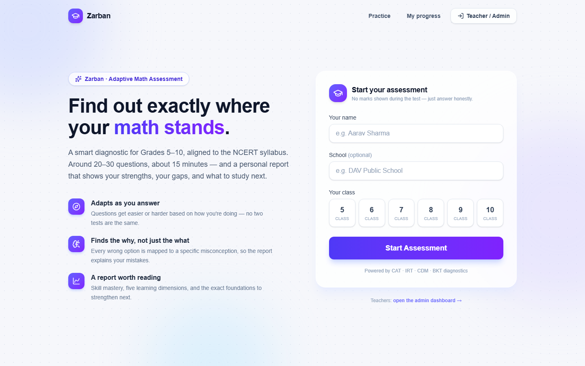
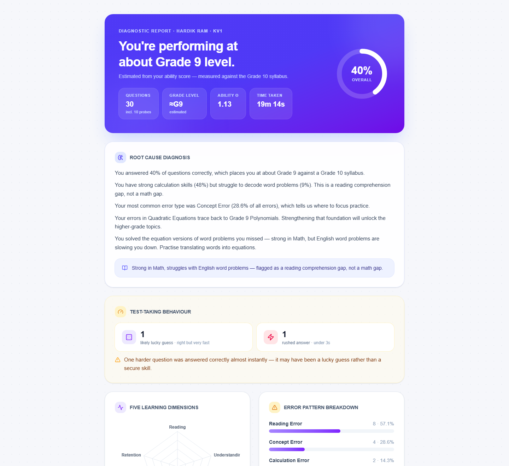
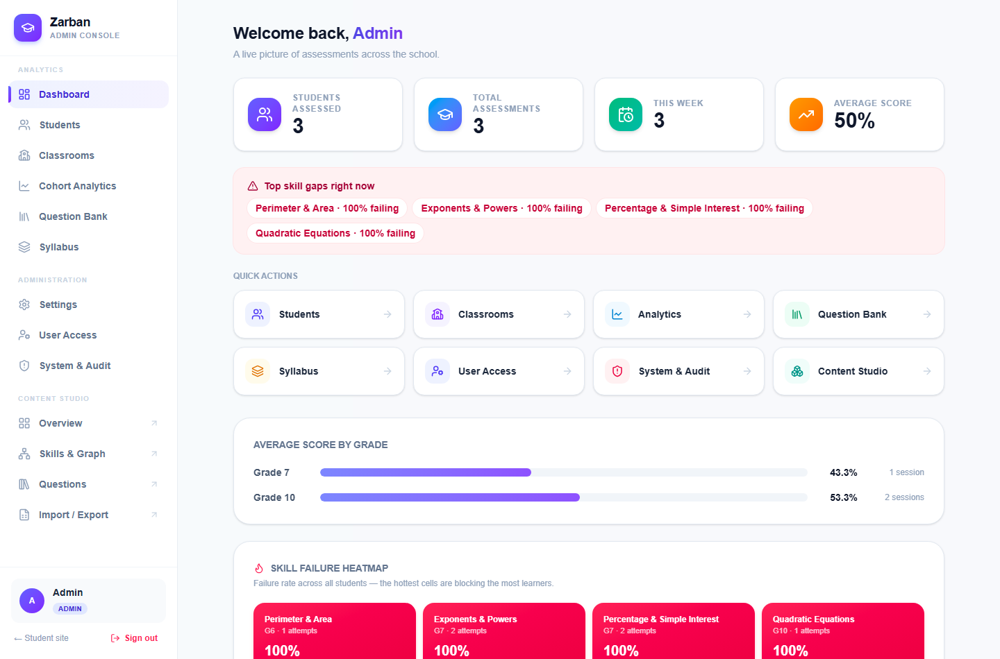
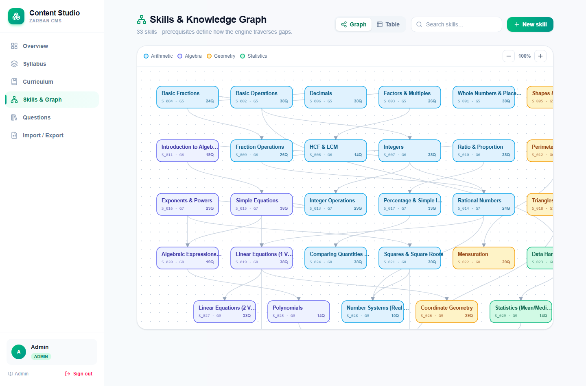
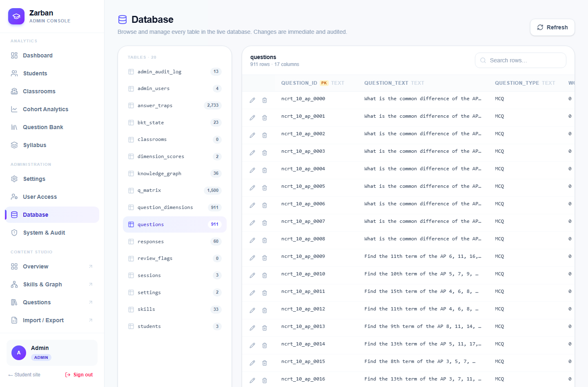

Zarban is a complete platform that assesses a student's math ability, diagnoses the reason behind every mistake, and turns that into targeted practice — with a full console for teachers and administrators to monitor and manage everything.
Ordinary online tests give a score. A score says a student is weak; it never says why or what to do next. A 60% could be a calculation slip, a reading-comprehension gap, or a missing skill from two grades below — and each needs a completely different fix.
Zarban finds the cause. It adapts to each student as they answer, and produces a report that reads like a tutor's assessment: “strong at the maths, but word problems are slowing them down — that's a reading gap, not a maths gap.”
Take an adaptive test (no marks shown during it), get a clear diagnostic report, and practise the exact gaps.
Monitor classrooms and cohorts, spot the skills blocking the most learners, and drill into any student.
Manage the question bank, curriculum, staff, system health, and the entire database.

The test adapts in real time — get answers right and it gets harder; struggle and it steps down toward the foundational skills that are actually the problem. When it ends, the student receives a diagnostic report.

A single console gives staff a live picture of the whole school — headline numbers, the “hottest” skill gaps right now, average score by grade, and a class-level heatmap of where learners are failing.

Every skill in the curriculum is mapped into a knowledge graph of prerequisites. That map is what lets the platform trace a Grade 10 mistake back to a missing Grade 9 skill and route the student there — the intelligence that makes the diagnosis meaningful.

Administrators can browse and manage every table in the live database directly — searchable, editable, and safe (every change is recorded).

| Interaction | Before | After | Faster by |
|---|---|---|---|
| Answering a question | ~480–610 ms | ~280–340 ms | ~45% |
| Loading the dashboard | ~311 ms | ~170 ms | ~45% |
| Loading the content hub | ~313 ms | ~150 ms | ~52% |